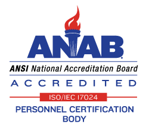

API 570 Piping Inspector Certification (2025)
This exam is scheduled to be administered in-person at designated test centers only.
Certified API 570 Piping inspectors must have a broad knowledge base relating to maintenance, inspection, alteration and repair of in-service metallic piping systems. The API 570 examination is designed to determine if applicants have such knowledge.
This certification program benefits employers and the industry as a whole by helping to:
- Provide a continued high level of safety through the use of inspectors specialized in process piping
- Improve management control of process unit inspection, repair, alteration and rerating
- Reduce the potential for inspection delays resulting from regulatory requirements
API 570 certification is valid for a three-year term and is accredited by the American National Standards Institute (ANSI). This accreditation ensures that the exam has been developed to the highest standard for openness and integrity and meets the rigorous requirements established under the International Organization for Standardization (ISO) 17024.
1. Studying for the Exam
-
Publications Effectivity Sheet - Questions on the API 570 exam are derived from the publications listed in this document. Only the specific sections of publications that are listed on the Effectivity Sheet will be available to you during the open-book portion of the exam.
- API 570 Publications Effectivity Sheet for 2025 exams
-
Body of Knowledge - List of specific topics included in the API 570 exam
- API 570 Body of Knowledge for 2025 exams
2. Exam Structure
- The API 570 exam day is 7.5 hours long - a short tutorial session, 2.75 hours for the closed-book portion, a 45-minute lunch break and 3.75 hours for the open-book portion.
- There are 170 questions on the API 570 exam, of which only 140 are scored. The remaining 30 are pretest questions.
- There are 110 closed-book questions and 60 open-book questions.
- View the Exam Tutorial before exam day to familiarize yourself with the format.
3. What Can You Bring Into the Exam
- Papers, notes and books are not allowed in Prometric computer testing centers.
- PDF documents of pertinent codes and standards will be available on your computer during the open book portion of the exam and will be presented in English.
- Learn More about Exam Day
4. Additional Resources
- Examination Policies & Notifications: Policies
- Purchasing Authorized API Publications: API Publications Store
- ANSI Accreditation